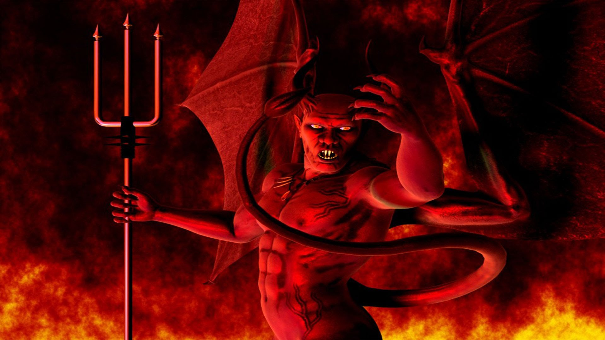
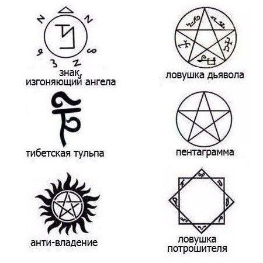

Призив демона


Ловушка демона-графический рисунок пятиконечной звезды ("пента" по-гречески "пять", "грамма" - "черта" или "линия"), древний знак, встречающийся со времён египетских пирамид. В сериале пентаграмма всегда заключена в круг. Является ловушкой для демонов, не позволяющей им выбраться из круга.
Тульпа-это существо, являющееся «физической материализацией мысли».
Пентаграма-перевернутая пятиконечная звезда. Данный символ встречается в жизни очень часто, однако не каждый человек знает его значение и уделяет ему внимание. Данный символ считается очень мощным и ведет многовековую историю. В свое время использовали этот знак древние египтяне, римляне, греки. В наши дни специалисты относят символ к области оккультных наук. Само слово «пентаграмма» имеет греческие корни и обозначает «пять» и «линий». В Месопотамии пентаграмма считалась защитным символом и оттуда попала в Элладу. Рисовать такой символ могли на дверях, окнах, посуде и даже одежде. Считалось, что так можно защитить себя от злых сил и темных духов, нехороших людей и врагов. В Вавилоне пятиконечная звезда связывалась с мощью и властью, и использовали ее в печатях.
АНТИ-ВЛАДЕНИЕ Этот символ служит для того, чтобы демон не смог вселиться в человеческое тело. Рисуется он непосредственно на самом человеке.
Была придумана ныне безымянной ведьмой в двадцатом столетии, которая была обозлена на Королеву вампиров за её жестокое поведение в местной небольшой деревушке. Тогда подчиненные Королевы убили практически всю деревню, некоторых даже обратили в вампиров. Та ведьма решила наказать обидчиков, совершив магический ритуал, при том находясь в тёмном трансе, придумала новую разновидность пентаграммы, которую и прозвали ловушкой потрошителя. Чертить её обязательно нужно с помощью крови, будь то человеческой или животной, в дань умершим тогда в деревне.